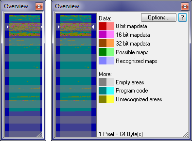
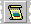

|
The dialog Overview (Menu Window) |

  
|
|
The dialog Overview (Menu Window) |
|

This dialog shows an overview of the current project and classifies the areas according to their suspected function. The analysis needed for this may take a few seconds and is done in the background.
If the cursor is moved over the graphic, the current pixel will be marked in legend on the right side of the window. A click in the graphic moves the view of the current window. A doubleclick in the graphic area will force WinOLS to recreate the information displayed in the window.
You may choose whether you want to display the differences between original and version or the simulator access in a light colour. To choose which should be symbolised by light pixels, click on 'Extended'. (You may need to make the dialog wider for this.) If you have WinOLS display the simulator accesses, you must have loaded the simulator previously. Furthermore you need to generate the needed data for this once with the corresponding menu item from the 'Extended' menu.
The width of this dialog may be changed to save space on the screen. You may change the height to the double of the default to get a better view.
This dialog is a "floating" dialog. All floating dialogs can be toggled with the tab key.
In the scrollbar:
WinOLS shows by default the overview information also in the hexdump scrollbars. Here they can contain additional information:
| · | White points at the left => Difference between original and version |
| · | Yellow triangle right => Position of a search engine |
| · | Yellow, dotted line right => Marker |
| · | Solid line right => Comment (In the comment's border color) |
A click (or: click+drag) in the color area jumps to this address. If you hold Shift pressed, WinOLS jumps to the nearest change in this area.
Shortcuts
| Symbol bar: |  |
| Keyboard: | o |